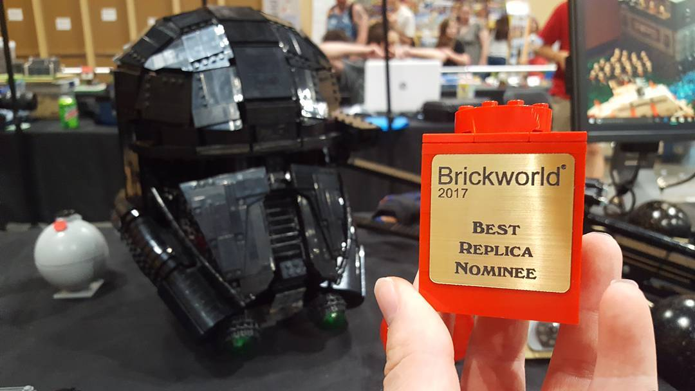

I’ve lived the last 17 years of my life since I was born in Southern California. I’ve long loved art in a variety of domains, from drawing, photography, and LEGO. Now, however, I’ve come fully around to filmmaking. Infact, LEGO is where I got my start in videography. When I was young, sometime throughout 2010, I discovered YouTube. I discovered creators, who I’ve now become lifelong friends with, who made videos about their custom LEGO creations. I wanted to do the same thing; I wanted to share my own custom LEGO art. The picture to the left is of this Star Wars Death Trooper helmet I made entirely of LEGO displayed at Brickworld Chicago in 2017. I made hundreds of videos, learning basically from square one, in an effort to try and make the highest quality, most entertaining videos I possibly could. Although the focus was always on the LEGO, and it still partly is, the passion for writing, filming, and editing soon took over my interest.
So now, instead of focusing on LEGO videos in my room, over the last couple years I’ve slowly been expanding my reach of experience into a wider variety of videos, including dramatic movies, short documentaries, or freelance work in order to both learn as much as possible and further add to my portfolio in preparation for film school. However, finding those aforementioned freelance opportunities from friends, family, and school can only go so far. That’s why I’ve learned to design and code this website, to reach out and at least serve other people by capturing their stories.
Freelance jobs capturing others’ moments deserves nothing but my full effort and attention. I constantly strive to make sure the final outcome is beautiful, unique, and interesting at the same time, while, again, telling their stories.